Outstanding service and a really positive experience. I visited Refocus The Brain Hub with my son regarding ADHD, and I honestly couldn't have been happier with the service we received. From the moment we arrived, we were made to feel welcome, listened to and supported. The team were professional, caring and understanding, and I really appreciated the time and attention they gave us. As a new business, they have made a fantastic impression, and it's clear that they genuinely care about the people they support. I'm more than happy to give Refocus The Brain Hub five stars and would definitely recommend them to anyone looking for a professional, supportive and caring service. Wishing them every success for the future!
Private ADHD and autism assessments in Manchester and online nationwide
The North West's first psychiatry and neuroscience brain hub
Specialist assessments for children and adults, including complex, overlapping and previously misunderstood presentations. Consultant-led, with qEEG brain mapping and personalised care.
- Led by consultant psychiatrists and psychologists
- Children, teenagers and adults
- qEEG brain mapping where clinically useful
- No GP referral needed
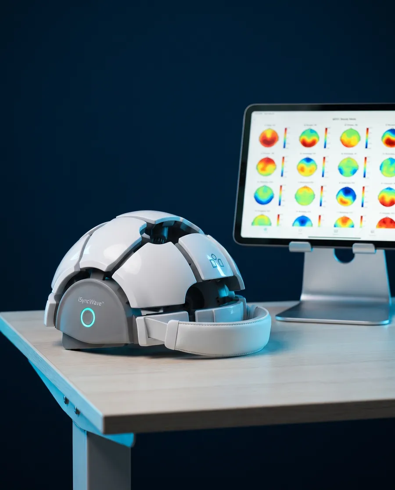
qEEG brain mappingObjective data on brain activity, alongside your clinical assessment
What our patients and families say
Feeling understood, at last
I didn't expect to gain this level of clarity about myself. At Refocus Hub, I finally felt understood rather than judged. The way they explain how the brain works is both scientific and easy to follow. If you struggle with anxiety, overthinking, or ADHD, this is genuinely one of the most helpful services you can access in the UK.
Following some research we chose Refocus for a combined ASD and ADHD assessment for our daughter. We chose Refocus as the assessment would be in person and they could liaise with school to allow them to inform the process. We found the environment calming, the consultants and clinicians expert in their field and the follow up meeting and report clear. We wouldn't hesitate in recommending.
I had a really positive experience with Refocus Hub. I initially reached out for support around focus and possible ADHD, but what I got was a much deeper understanding of how my brain actually works. The BrainMap assessment was particularly helpful, not overwhelming, just clear and well explained. It connected a lot of things for me, especially around stress and emotional responses. I would definitely recommend this service to anyone in the UK looking for a more in-depth psychological approach.
Refocus Hub offers a highly professional ADHD assessment service in the UK. The process was well-organized, and the feedback I received was detailed, practical, and tailored to my specific cognitive and emotional patterns. This is not a generic approach, it's personalised and evidence-based. Highly recommended.
The team is amazing really kind friendly place o struggled a bit with my anxiety but I felt very comfortable they are the first people in my whole life too diagnose me with adhd. Would reccomend too anyone. Thank you
8 billion people. 8 billion unique brains.
Why are we still treating them the same?

Based in Manchester
A questionnaire can't see your brain. We can.
Refocus was built to move psychiatry forward, bringing together specialist clinical assessment, brain mapping, neuromodulation and compassionate psychiatric care for modern, complex minds.
We combine consultant-led psychiatry and psychology, neurodevelopmental expertise, qEEG brain mapping, evidence-based psychiatric treatment and neuromodulation support. Together they build a more complete picture of how your brain works, and what may help it work better.
- Precision brain care
- Backed by science
- Focused on you
A diagnosis can provide answers. It should never be the end of the conversation.
ADHD, autism, anxiety, mood, hormones, sleep, trauma and cognitive difficulties overlap in complex ways, and the same symptoms can mean very different things in different people. So our assessments don't stop at a label. We look at development, mental health, cognition, lived experience and, where clinically useful, brain activity itself.

Second-opinion expertise
Our senior clinicians have spent decades leading NHS neurodevelopmental services, not just working in them. When a previous assessment hasn't given you the full picture, we have the depth to look again properly.
Neuroscience, not just questionnaires
Where clinically appropriate, qEEG brain mapping adds objective data on brain activity to the clinical picture, a layer most assessment services don't offer.
Care that continues beyond diagnosis
Understanding your brain is only useful if it changes what happens next. Our Brain Care pathway, from neurofeedback and photobiomodulation to medication support and coaching, is built around what you need, not a fixed package.
Across the whole lifespan
From children struggling at school to women whose lifelong coping strategies stop working at perimenopause, we work with the full range of how brains present and change over time.

How we can help
A complete, personalised pathway for your brain
Specialist assessment, brain mapping and personalised care for every unique brain, all in one place.
Diagnostic assessments
Understand what is going on, and why.
ADHD assessments
Understanding ADHD beyond symptoms, and what your brain needs.
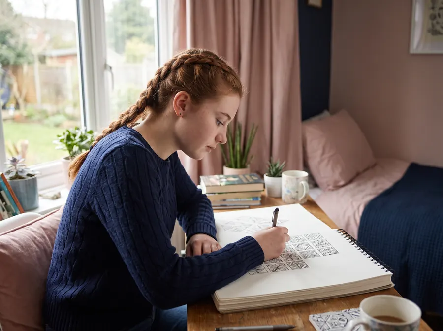
Autism assessments
Neurodiversity-affirming, including masking and sensory differences.
Complex and second-opinion assessments
For overlapping or previously missed presentations.
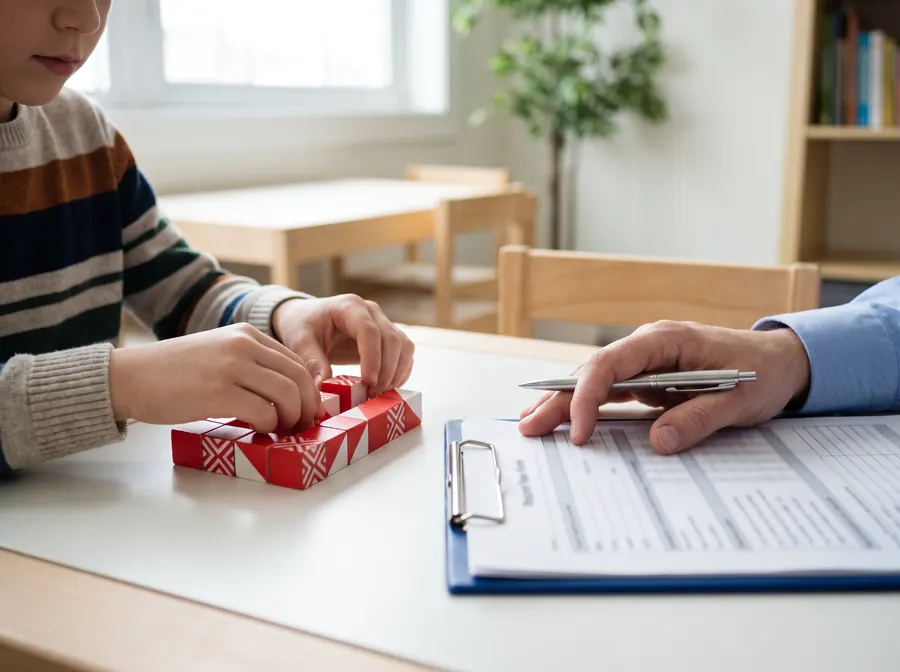
Learning and cognitive assessments
Cognitive strengths, learning needs and developmental profile.
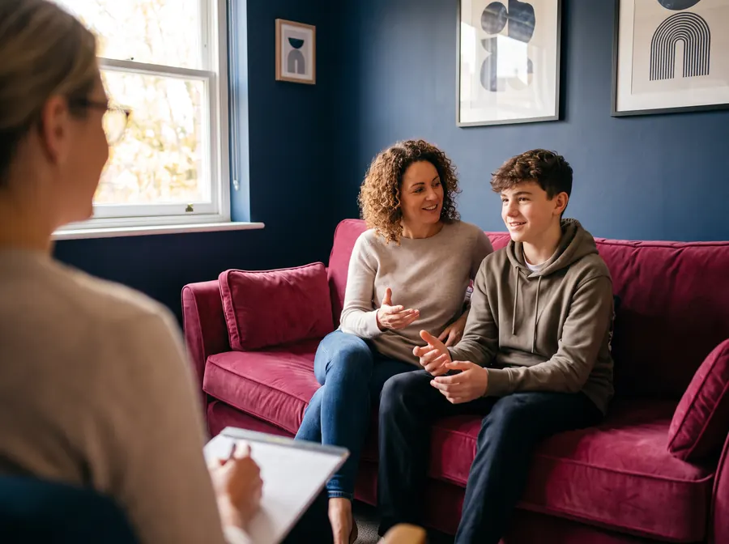
Child and adolescent mental health
Anxiety, mood, behaviour and complex presentations.
Tics and Tourette's assessments
Specialist assessment and support for children and young people.
At the centre: qEEG brain mapping
Objective data on brain activity, added to the clinical picture
Not a diagnosis on its own. An extra layer of insight that connects your assessment to your care.
How brain mapping worksBrain health and support
Use what we learn to help your brain work better.
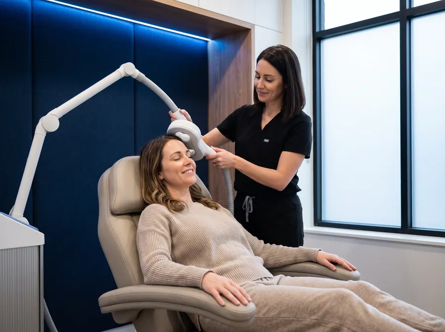
Neuromodulation therapies
TMS, neurofeedback and photobiomodulation, tailored to your brain.
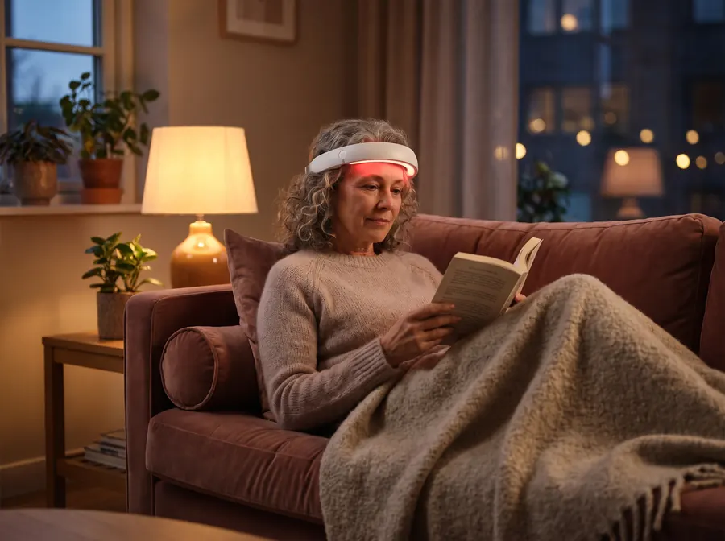
At-home brain therapy
Infrared light therapy to support memory, cognition and healthy brain ageing.
ADHD coaching
Practical, personalised strategies that build skills for everyday life.
Medication support
Assessment, titration and ongoing clinical monitoring.
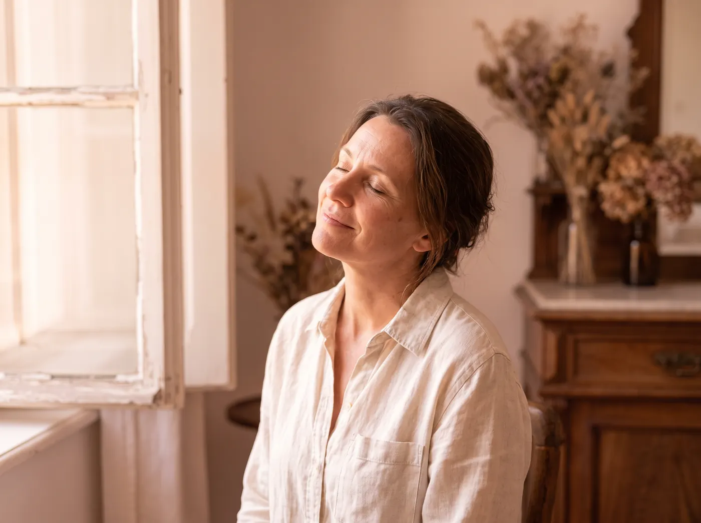
Women's neurohormone pathway
Brain and hormones through perimenopause, menopause and beyond.
Cognitive optimisation
For peak performance, focus and long-term brain health.
- Every brain is different. Your pathway is tailored to you.
- Consultant-led. Expert care you can trust.
- Science-backed. Decisions informed by evidence.
- Human-centred. Care that sees the whole you.
Why families and adults choose us
Consultant-led. Clinically robust.
Every assessment at Refocus is led by a Consultant Psychiatrist or Consultant Clinical Psychologist, not a junior clinician working from a protocol.
Our team has held senior leadership roles across NHS Trusts. Several of our clinicians trained at nationally recognised specialist centres, including a national second-opinion autism service.
- Neurodevelopmental Pathway Medical Lead
- Trust Safeguarding Doctor
- CAMHS Clinical Lead
- Safeguarding Lead
- Expert Clinical Advisor to NHS England
That experience is why we can offer complex diagnostic assessment and second opinions with confidence, particularly where symptoms overlap, previous conclusions were unclear, or someone has spent years feeling misunderstood.
Assessments follow NICE guidance and UK quality standards, using validated diagnostic tools, developmental and collateral history, and senior clinical judgement, not questionnaire scores alone.
- DIVA-5
- Adult ADHD
- Young DIVA-5
- Child ADHD
- ADOS-2
- Autism
- ADI-R
- Autism
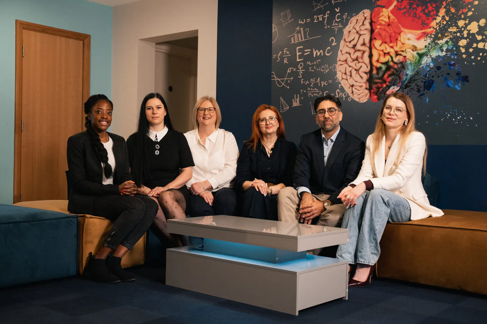

Reports built for real use
Shareable with GPs, schools, universities and other professionals involved in your care.
Our approach
Understand. Map. Personalise. Refocus.
A clearer understanding, then a brighter next step. The right pathway is the one that makes sense for you.
-
1
Understand
Start with the whole person.
We listen to your story, development, strengths and difficulties before deciding what they mean. From ADHD, autism and learning differences to children's mental health, complex neurodevelopmental presentations, and tics and Tourette's, our assessments are built to tell apart presentations that look similar on the surface but aren't.
-
 2
2
Map
See another layer of the picture.
Where clinically appropriate, we add qEEG brain mapping, a non-invasive recording of the brain's electrical activity. It doesn't replace clinical assessment and isn't used to diagnose ADHD, autism or any other condition on its own. It gives us an additional, objective source of information on patterns of brain activity, alongside the clinical picture.
Sometimes the first step isn't another label. It's a clearer picture.
-
 3
3
Personalise
Use what we learn to guide what comes next.
Two people can share the same diagnosis and experience it completely differently, and your recommendations should reflect that. We combine clinical expertise, your circumstances and, where relevant, neuroscience data to build a plan that may include psychoeducation, ADHD coaching, medication support, transcranial magnetic stimulation (TMS), neurofeedback or transcranial photobiomodulation.
The right pathway is the one that makes sense for you.
-
4
Refocus
Move forward with greater clarity.
Our goal isn't simply diagnosis or treatment. It's helping you understand your brain well enough to make better decisions about what happens next, at school, at work, at home, and through different stages of life.
Book a free 15-minute call
Built for complex minds
We support children, teenagers and adults across the lifespan
Particularly people who have spent years thinking “why is everything harder for me than it seems to be for everyone else?”
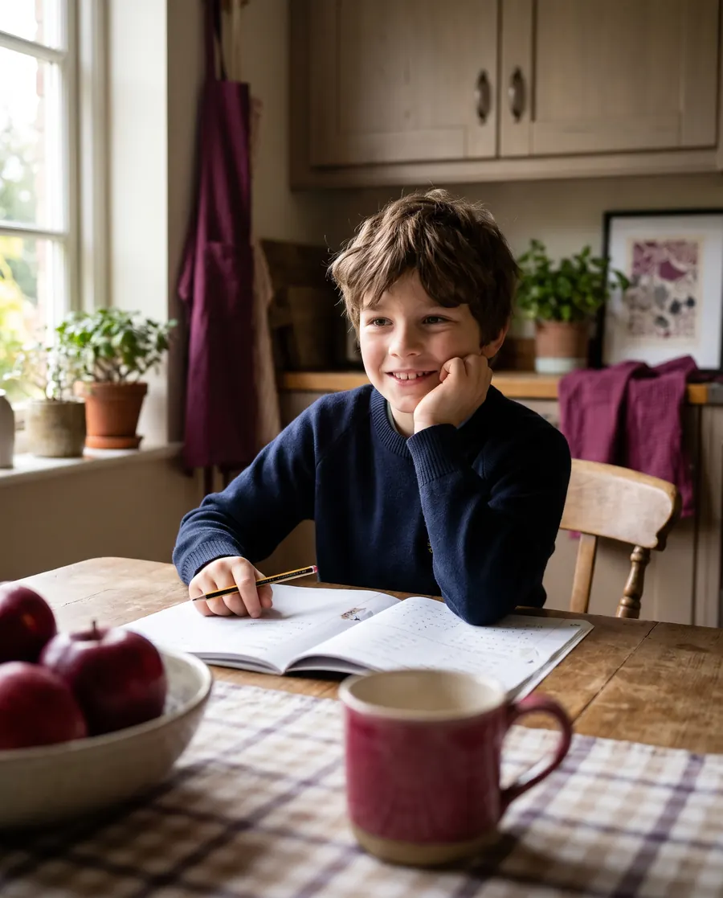
The bright child
who holds everything together at school, and falls apart at home.
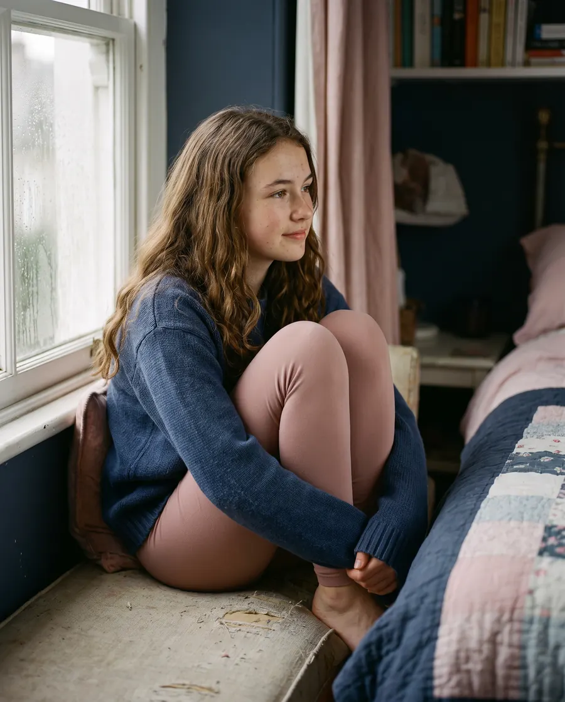
The teenager
whose ADHD, autism, anxiety and emotional regulation difficulties overlap.
The adult
who has spent decades compensating, without ever fully understanding why life feels harder than it should.
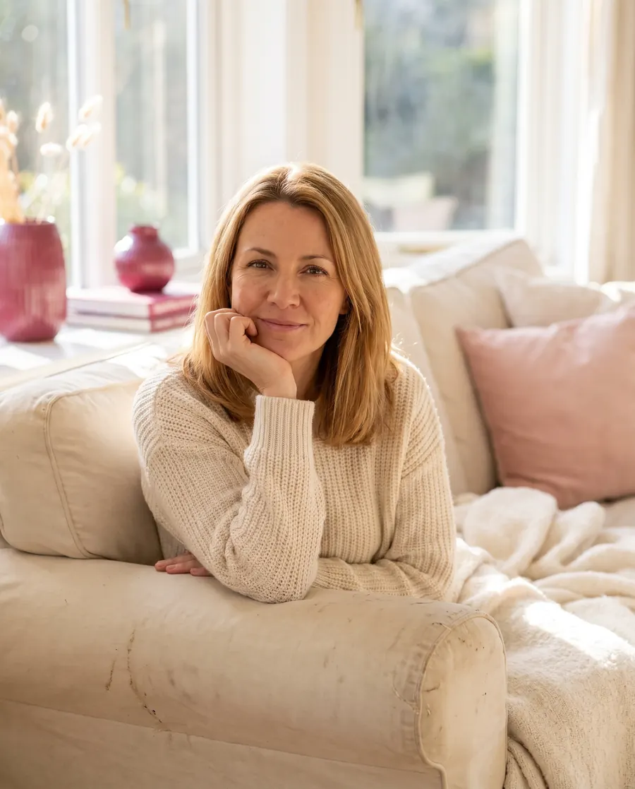
The woman
who reaches her forties and finds the strategies that worked all her life suddenly no longer work.
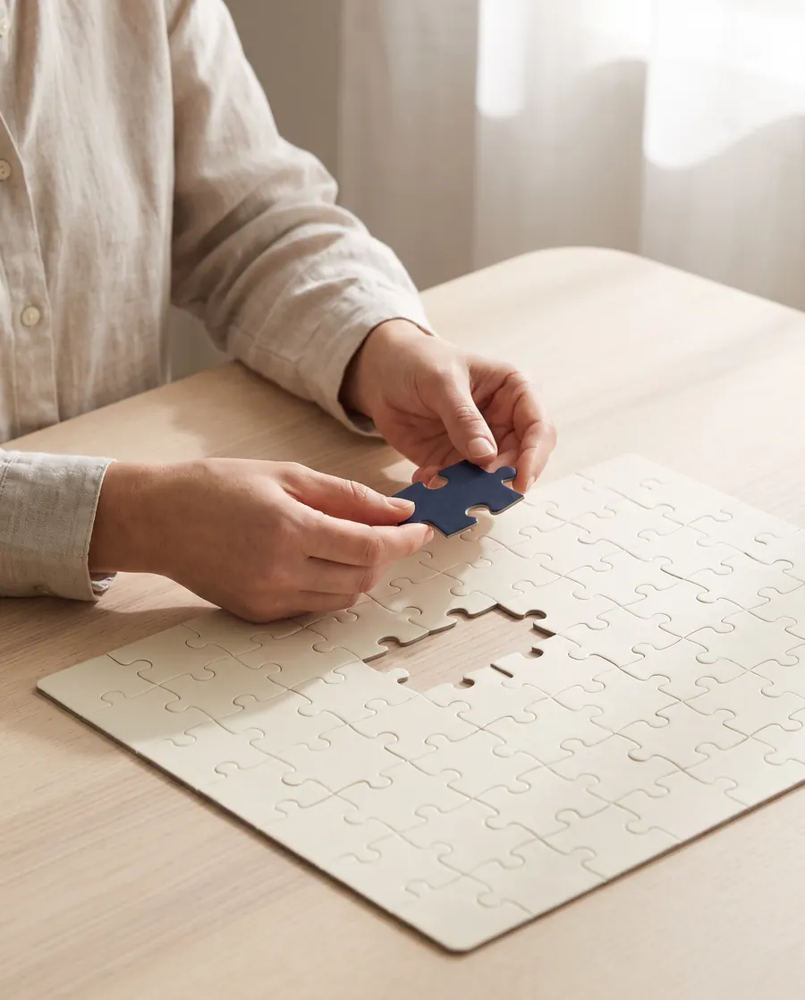
The person who doesn't fit one box
and needs someone to look at the whole picture.
The person with a diagnosis
who still doesn't feel they truly understand their brain.
And also
The high performer
who isn't struggling, but wants to understand their brain, optimise cognitive performance and explore neuroscience-led ways to go further.
Explore how we can help
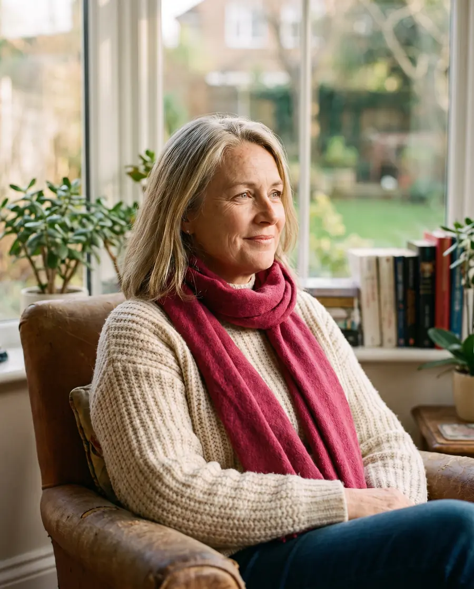
ADHD, mental health and hormones, assessed together
Women's brain health
When hormones change, your brain does too
Many women reach their forties having coped for decades, only to find focus, memory and mood slipping as perimenopause begins.
It isn't a personal failing. Brain and hormones are connected, and your care should be too.
Our Neurohormone Clinic brings psychiatry, ADHD expertise and menopause care together, so you get one joined-up picture instead of separate appointments that never quite connect.
Filmed at our Manchester clinic
A real qEEG brain mapping session
qEEG brain mapping
See how your brain is working, not just how you feel
qEEG is a painless recording of the brain's electrical activity. It is never used on its own to diagnose, but in selected cases it adds objective insight into attention, regulation and processing, and helps shape your care.
- A lightweight sensor headset is fitted while you sit comfortably
- Your brain activity is recorded and turned into colour maps
- Your clinician explains what the maps show and how they fit your assessment
Meet the minds behind Refocus
Senior clinicians, one joined-up team
Consultant psychiatrists, psychologists and advanced practitioners with extensive NHS and private experience, across children, teenagers and adults.
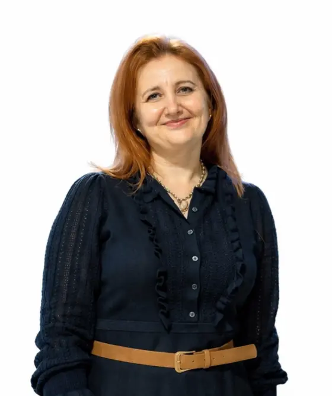
Dr Miriana Vrajitoriu
Consultant Child and Adolescent Psychiatrist, Founder and Medical Director
GMC Specialist Register, MRCPsych, ADOS-2, ADI-R. Former NHS Neurodevelopmental Pathway Medical Lead.

Dr Helen Walsh
Consultant Clinical Psychologist, Clinical Lead
ADOS trained. Over 30 years' NHS experience leading neurodevelopmental assessment services.
Dr Muhammad Adnan Hafeez
Consultant Psychiatrist, Adult ADHD and Neuropsychiatry
GMC registered. Significant experience in adult ADHD assessment and treatment, psychopharmacology and neuropsychiatry.

Dr Syeda Sabeen Ashar
Consultant Psychiatrist, Liaison Psychiatry and Adult ADHD
GMC Specialist Register, MRCPsych, CCT, Section 12 approved. Over two decades of NHS experience.

Dr Arif Qadir
Consultant Psychiatrist, Safeguarding Lead
ADI-R, DISCO-3 and Maudsley adult ADHD assessment training.
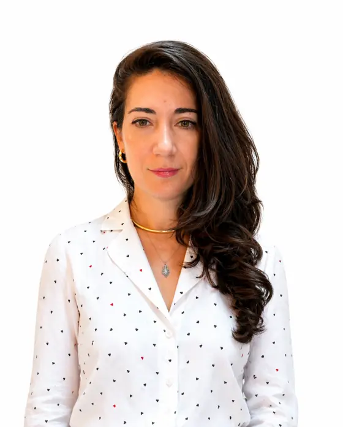
Dr Suzana Alexandra Corciova
Consultant Psychiatrist
GMC registered, MRCPsych, CCT, ADI-R, UKAAN.
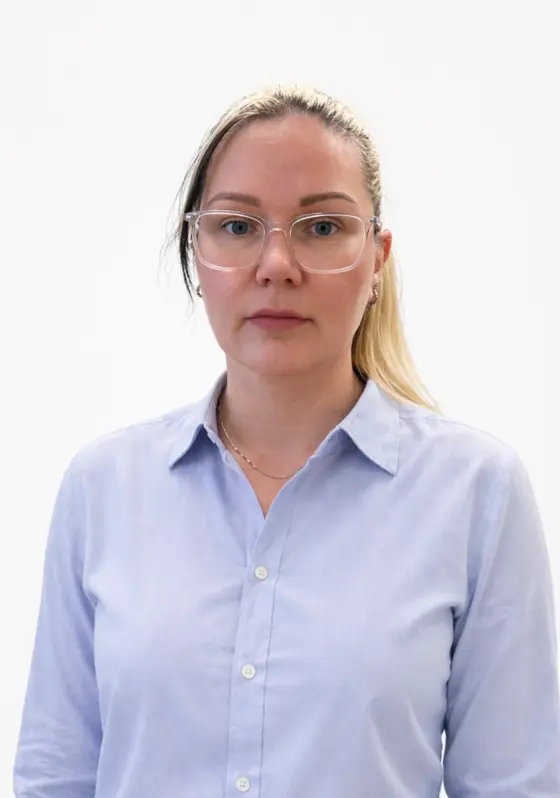
Sarah Williams
Advanced Clinical Practitioner, Women's Neurodevelopmental Health Lead
RMN, V300 Non-Medical Prescriber, MSc Advanced Clinical Practice.
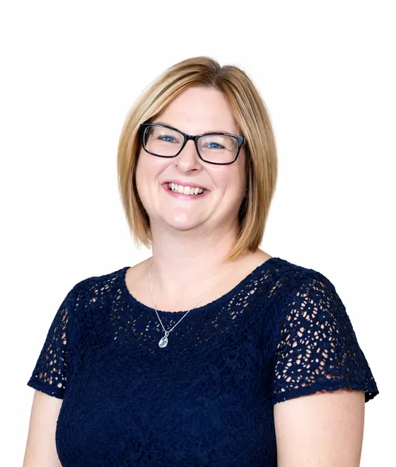
Claire McGuinness
Advanced Nurse Practitioner, ADHD Medication Pathway Lead
NMC registered Independent Prescriber with over 30 years' NHS experience.
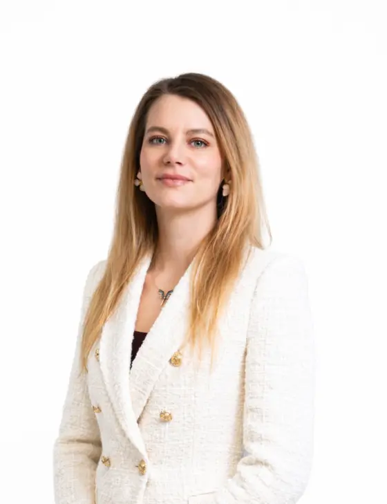
Denisa Anamaria Scripcariu
Clinical Psychologist, Brain Mapping Specialist
Applied neuroscience and qEEG brain mapping.
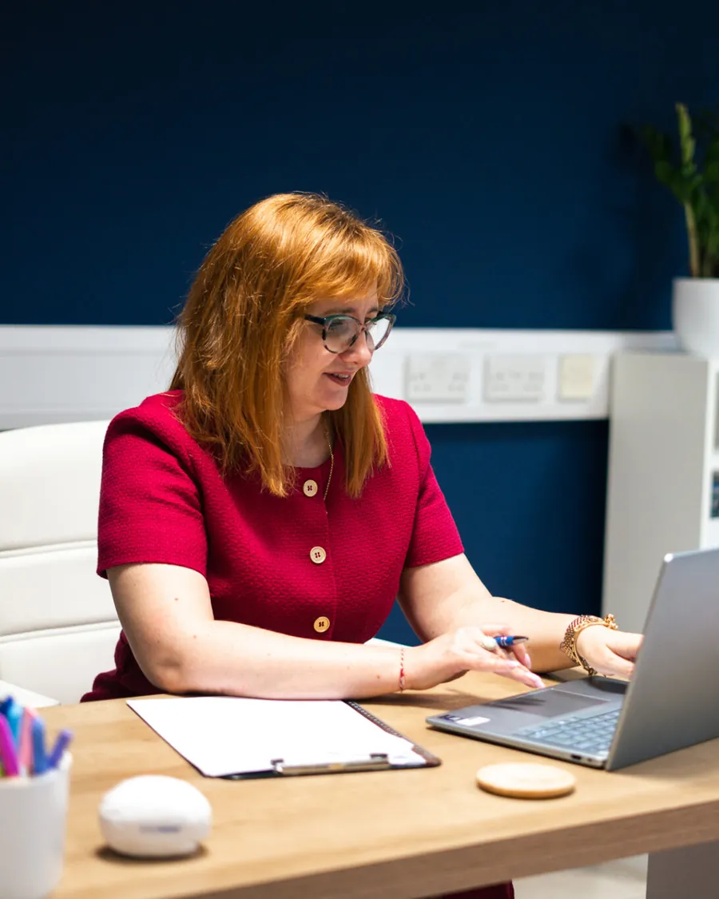
A message from our founder
“Why, when every brain is different, does mental healthcare so often begin by assuming the same pathway will work for everyone?”
I spent over two decades in psychiatry, including years leading NHS neurodevelopmental services. I helped assess complex children and young people, develop ADHD and autism pathways, and support families searching for answers. That question stayed with me.
Refocus grew from the belief that psychiatry and neuroscience shouldn't sit in separate worlds. We can listen to someone's story and apply rigorous clinical assessment. We can also use modern neuroscience to understand another layer of brain function. Bringing those together is what makes care genuinely individual.
Refocus is the service I wanted to see exist: clinically rigorous enough for complex cases, curious enough to look beyond the obvious, and human enough never to forget the person behind the data.
There are 8 billion brains in the world. Your care should begin with understanding yours.
Dr Miriana VrajitoriuConsultant Child and Adolescent Psychiatrist, Founder and Medical Director
Read our story
Questions, answered
Frequently asked questions
Can't see your question? Our team is happy to help.
No. You can book directly with us, starting with a free 15-minute call. You don't need a referral from your GP.
Yes. We assess children, teenagers and adults, using age-appropriate tools such as Young DIVA-5 for children and DIVA-5 for adults. Child assessments include developmental history and, where helpful, input from school.
Yes. Our senior clinicians regularly review previous assessments, particularly where symptoms overlap, the outcome felt unclear, or you still don't feel understood.
No. qEEG is never used on its own to diagnose any condition. Where clinically appropriate, it adds objective information on brain activity alongside the clinical assessment, and your clinician will tell you honestly whether it's likely to help.
Yes. We see people in person at our Manchester clinic and online across the UK. Online assessments use the same senior clinicians, tools and written report.
Our reports follow NICE guidance and are written to be shared with GPs, schools, universities and other professionals. Whether a GP agrees to NHS shared care for medication varies between practices, and we'll be open with you about your local options.
It depends on the assessment and whether you're seen online or in person. You'll find every assessment and therapy on our prices page, and we'll confirm costs on your free call.
Our clinic is at 6 Oxford Place, Manchester M14 5RZ. People travel to us from across Greater Manchester, Cheshire, Lancashire, Merseyside and Yorkshire.
Our clinicians are registered with and recognised by
Ready to Refocus?
Start with understanding your brain
A free 15-minute call with our team is the easiest first step. Confidential, supportive and no pressure.
Prefer to talk now? Call 0161 470 7093 or see our prices.